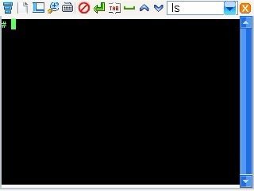
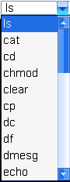

昊哥的NP1500私房菜
2012-02-05今天我们准备了解终端（Terminal）。
终端把用户输入的命令发送给系统，系统处理这个命令，然后把命令的输出返回并打印到屏幕上。
我个人认为，终端就是我们和系统交流的工具。
接下来我们就来了解机子的终端。
1500自带了终端的图标，而1300、1380没有带，但可以通过编程天地调出来，调出来的方法1380的说明书上有，想了解的可以自己看。
打开终端以后是一个黑底白字的界面。

终端的最上面那一行
第一个图标是菜单，可以在里边切换/新建会话，设置字体大小和颜色、滚动条位置、是否自动换行。
第二个图标是新建会话，第三个是切换会话，第四个是调整字体大小，第五个是打开键盘，第六个是结束命令，第七个是输入键，第八个是补全命令，也就是TAB键，带有自动完成功能，可以自动补全文件名。
比如有一个命令叫hello，你输入hel，然后按两下那个，如果没有hel开头的其他命令，就会自动补全成hello。
问：我输入了一个vi，然后tab，出来三个，咋办？
看哪个是你要的，然后就输完。
问：有点晕，不是自动补全嘛，还要手动输啊？
有三个同样开头的命令，剩余的部分就得要你自己输了，机器不知道你要哪个。
比如：有2个命令，一个叫zhiyb，一个叫zhibb，得输入到zhiy或zhib才有效。
如果只有1个，按一下就会自动补全。如果有多个，按两下就会把那个开头的全部列出来。
第九个图标是空格，第十个是上一个命令（上键），第十一个是下一个命令（下键）。
然后有一个列表

，可以从那里面选择一些比较常用的命令。最后一个图标是关闭终端。
终端的#代表我们有root权限。root就是系统中唯一的超级用户，具有系统中所有的权限，相当于Windows的Administrator。
输入完命令要按输入键这个都知道吧。
终端是不支持中文输入的，键盘上也没有中文键盘（没有开启），但可以通过手动调出来。
方法是：第一个图标 -> 历史命令 -> 把键盘弄出来，然后所有可用的键盘就都出来了。
问：咋把汉字写在黑底上啊？
说过了，不支持，但是可以通过read命令等写入到变量里，这个以后再说。
今天的课就到这里了。下课！（起立！）老师再见~